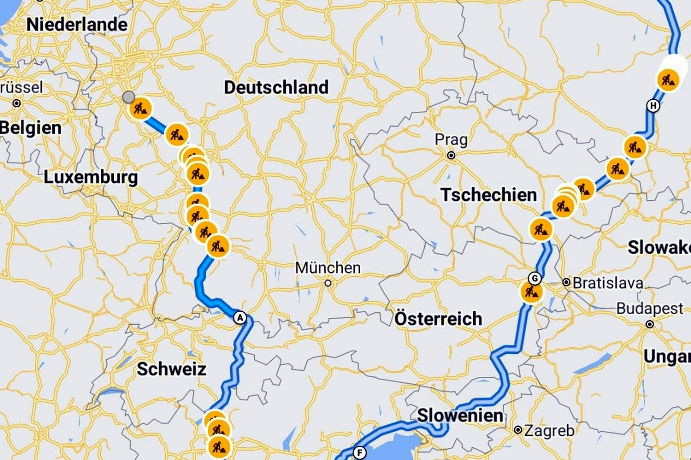
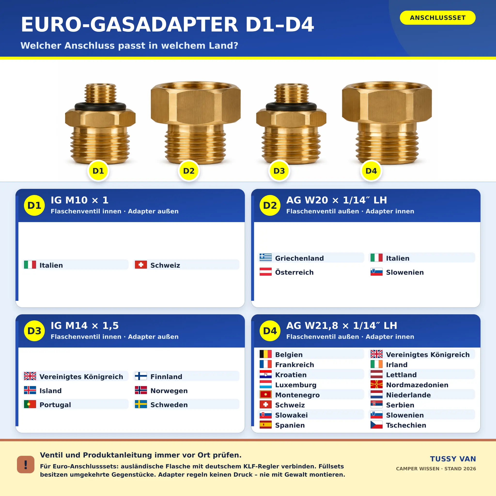

Gas cylinder adapters in Europe: Which connection fits in which country?
You're parked with the camper somewhere in Europe, the German gas bottle is empty – and the bottle in the store looks familiar, but its valve is not at all. Euro adapters are available precisely for this moment. But D1, D2, D3, and D4 are not four magic universal plugs. The key is whether you want to connect a foreign cylinder to your system or have a German cylinder filled by an authorized filling station.

First, clarify: removal set or filling set?
In retail, the names sound almost the same, but technically they are two different things. A Outlet or connection adapter connects a gas cylinder purchased or rented in the destination country with a German pressure regulator. The gas flows from the foreign cylinder into your camper facility. A Fill adapter on the other hand, it serves to connect a German gas cylinder to the filling facility of an authorized European filling station.
The designations D1 to D4 are used for both tasks. However, the matching internal and external threads are designed as counterparts. Therefore, it is not enough to simply order "D4". The packaging must also clearly state Removal/Connection or Filling stand. A filler nozzle is not a sampling nozzle – even if both look similar.

The well-known fuel adapters are something else ACME, Dish, Bayonet, and Euronozzle. They belong to permanently installed gas tanks or approved, refillable tank gas cylinders. Cartridges according to EN 417 also form their own system. The four D-adapters described here do not replace tank adapters, pressure regulators, high-pressure hoses, or gas filters.
D1 to D4 at a glance
The following thread overview describes the connection page of a common Euro-fill-Sets for German KLF bottles. "LH" stands for left-hand thread. For the sampling set, you need the matching counterpart; therefore, stick to the specific product labeling.
M10 × 1
Internal thread in the filler neck
W20 × 1/14" LH
External thread, left
M14 × 1.5
Internal thread in the filler neck
W21.8 × 1/14" LH
External thread, left
Country table: Which gas adapter is used where?
The core classification follows the current manufacturer overview of the GOK Euro set. Where multiple adapters are present, several bottle systems are common. Additional clues show countries where providers or regions deviate particularly frequently. The name of the country alone is never as reliable as the valve marking on the specific bottle.
| Country | Common adapter | Note |
|---|---|---|
| 🇧🇪 Belgium | D4 | Check the supplier and bottle. |
| 🇩🇰 Denmark | D3 or D4 | Depending on the bottle system; not only by country flag. |
| 🇩🇪 Germany | usually no D-adapter | German KLF bottle and German regulator usually go together. |
| 🇪🇪 Estonia | often D4 | Compare the local valve before purchasing. |
| 🇫🇮 Finland | D3 | Only an authorized body is allowed to fill bottles. |
| 🇫🇷 France | D4 | A local exchange bottle with a dispensing adapter is often the more practical option. |
| 🇬🇷 Greece | D2 | W20 left-hand thread is common. |
| 🇮🇪 Ireland | D4 | Match bottle supplier and regulator connection. |
| 🇮🇸 Iceland | D3 | Plan supply before longer stages. |
| 🇮🇹 Italy | D1 or D2 | Several systems are common; older tables sometimes mention additional variants. |
| 🇭🇷 Croatia | D4 | Clarify the filling acceptance and inspection period of the bottle in advance. |
| 🇱🇻 Latvia | D4 | Confirm valve type directly on the bottle. |
| 🇱🇺 Luxembourg | D4 | Depending on the exchange system, no adapter may be necessary. |
| 🇲🇪 Montenegro | D4 | Check local availability before your trip. |
| 🇳🇱 Netherlands | D4 | German bottles are not exchanged everywhere. |
| 🇲🇰 North Macedonia | D4 | Manufacturer lists sometimes still use the old name "Macedonia". |
| 🇳🇴 Norway | D3 | An additional provider-specific adapter may be required. |
| 🇦🇹 Austria | D2 | Other compatible bottle systems are also available. |
| 🇵🇱 Poland | often German KLF | Often usable without a D-adapter, but check the specific provider. |
| 🇵🇹 Portugal | D3 | Schedule local rental bottles plus collection adapters. |
| 🇷🇸 Serbia | D4 | Confirm connection and permissible filling on site. |
| 🇸🇰 Slovakia | D4 | Check threads and seals. |
| 🇸🇮 Slovenia | D2 or D4 | Several systems are common. |
| 🇪🇸 Spain | D4 | The bottle collar may additionally require a suitable connection solution. |
| 🇸🇪 Sweden | D3 | Depending on the provider, an additional local adapter may be necessary. |
| 🇨🇭 Switzerland | D1 or D4 | Threads that look similar are not automatically compatible. |
| 🇨🇿 Czech Republic | D4 | Valve marking remains crucial. |
| 🇭🇺 Hungary | often D4 | Check on site whether the bottle matches the usual system. |
| 🇬🇧 United Kingdom | D3 or D4 | In England, Scotland, Wales, and Northern Ireland, various provider systems are in circulation. |
Is your travel destination missing? That doesn't mean there's no gas there. It only means that no reliable general recommendation can be derived from the set of four. Ask your local bottle supplier about connection, regulator pressure, exchange system, and permitted use in the vehicle.
Why country lists can never be one hundred percent complete
Gas cylinders are not determined by a country alone. Large and small bottles, propane and butane, regional brands, exchange systems, as well as older and newer valves can have different connections. Italy, Switzerland, Slovenia, and the United Kingdom are good examples: several D-adapters appear in manufacturer lists there. Anyone who simply screws on the first adapter from the table risks a crooked thread or a leaky connection.
The safe order is therefore: first inspect the valve, then compare the embossing or thread specification with the set instructions, and finally check whether the part is really suitable for Extraction or Filling is thought. Adapters must never be forcibly "made" to fit. Even additional sealing tapes, unsuitable O-rings, or self-built intermediate pieces have no place in a liquefied gas system.
How to proceed safely when changing bottles
- Turn off all gas appliances, keep ignition sources away, and close the bottle valve.
- Work only in a well-ventilated bottle crate and make the connection completely pressure-free.
- Check valve, adapter, and seal for dirt, cracks, deformation, and missing parts.
- Install the explicitly fitting outlet adapter according to the manufacturer's instructions. Do not forcibly turn the left-hand thread in the wrong direction.
- Correctly connect the pressure regulator or the designated high-pressure hose. The adapter itself does not regulate pressure.
- Slowly open the valve and check all newly connected areas with an approved leak detector.
- If blisters form or you smell gas: close the valve immediately, ventilate, and do not use the system. Do not use a flame for leak detection.
Have your German gas cylinder filled abroad
A Euro filling set is not a free pass for self-service at an autogas pump. Conventional German exchange bottles may only be filled by an authorized filling station and according to the applicable local regulations. The filling station decides whether to accept your bottle. Condition, labeling, inspection period, and permissible fill quantity must be correct. After filling, the nozzle is removed again; it does not remain as a permanent connection to the bottle.
If a filling station refuses, a local loan or exchange bottle with the right dispensing adapter is often the better solution. For longer trips, a properly installed, approved tank gas cylinder can also be useful. However, for that, you need the appropriate tank adapters and an installation designed for this purpose—not the D1 to D4 filling kit from this post.
My sensible gas travel box
- the route-appropriate, clearly labeled sampling set,
- the original manufacturer's manual, both digital and on paper,
- intact replacement seals exactly for this set,
- approved leak detection spray,
- work gloves and the tools provided by the manufacturer,
- Photos of your own regulator, hose, and cylinder markings,
- Address of a gas company or camping dealer at the nearest destination.
Conclusion: The table is the start, not the last test
With the right Euro set, you can travel much more relaxed on many European routes. In particular, D4 covers many common systems, while D1, D2, and D3 become crucial for certain countries and providers. Nevertheless, the focus on the specific bottle is more important than any national flag. It's better to take five minutes for threading, sealing, and instructions – gas is a wonderful travel companion, but not an area for improvisation.
Sources and Data Status
Status: September 2026. Technical basis: Manufacturer overview and installation instructions from GOK as well as the connection standard DIN EN 15202. Safety instructions for camper gas systems: DVGW.
See you soon and always have a good trip,
your Tussy 💛